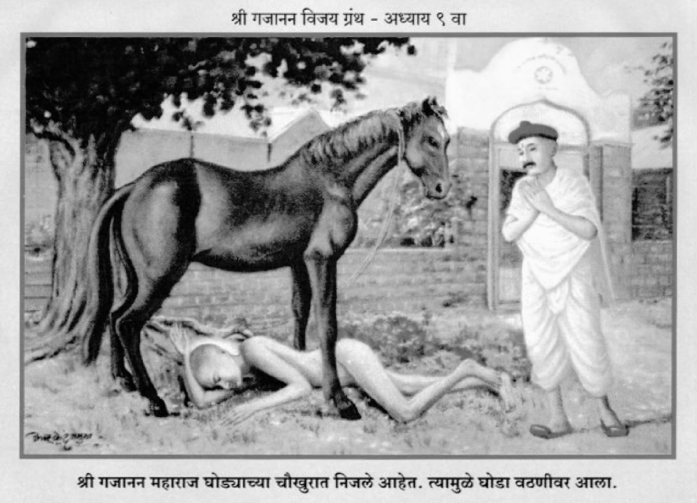

॥ अध्याय ९॥

॥ श्रीगणेशाय नमः ॥
हे सगुण स्वरूपा रुक्मिणीवरा ।
हे चंद्रभागातटविहारा ।
श्रीसंतवरदा शारंगधरा ।
पतितपावना दयानिधे ॥१॥
लहानावांचून मोठ्याचा ।
मोठेपणा न टिके साचा ।
पतिताविण परमेश्वराचा ।
बोलबाला होणें नसे ॥२॥
आम्ही आहों पतित ।
म्हणून तुला म्हणतात ।
पावनकर्ता रुक्मिणीकांत ।
हें आतां विसरूं नको ॥३॥
परिस लोहाला सोनें करी ।
म्हणुनी त्याचें महत्त्व भूमीवरी ।
ओहोळ पोटीं घे गोदावरी ।
म्हणून म्हणती तीर्थ तिला ॥४॥
याचा विचार करावा ।
चित्तीं आपुल्या माधवा ।
दासगणूला हात द्यावा ।
बुडूं न द्यावें कोठेंही ॥५॥
असो गोविंदबुवा टाकळीकर ।
एक हरिदास होता थोर ।
तो कराया कीर्तनगजर ।
शेगांवासी पातला ॥६॥
तेथें शिवाचें मंदिर ।
पुरातन होतें साचार ।
ज्याचा केला जीर्णोध्दार ।
मोटे नामक सावकारें ॥७॥
अलिकडच्या श्रीमंताला ।
मदिराचा कंटाळा ।
मोटारी क्लब बायसिकला ।
यांचें प्रेम बहु असे ! ॥८॥
तैसा न मोटे सावकार ।
श्रीमंत असून भाविक फार ।
त्यानेंच हा जीर्णोध्दार ।
केला असे मंदिराचा ॥९॥
म्हणोन मोट्याचें मंदिर ।
वदूं लागले नारीनर ।
आतां पुढचा प्रकार ।
काय झाला तो ऎका ॥१०॥
त्या मोट्याच्या मंदिरीं ।
उतरले टाकळीकर कथेकरी ।
त्यांचा घोडा समोरी ।
बांधिला होता मंदिराच्या ॥११॥
घोडा अतिद्वाड होता ।
कोणासही मारी लाथा ।
समोरून कोणी येतां ।
त्यास चावे कुत्र्यासम ॥१२॥
तोडी चर्हाटें वरच्यावरी ।
स्थिर न राहे क्षणभरी ।
कधीं कधीं कांतारीं ।
त्यानें जावें पळोन ॥१३॥
खिंकाळे रात्रंदिवस ।
वाईट खोड्या बहुवस ।
आल्या होत्या मुक्कामास ।
श्रोते तया घोड्याच्या ॥१४॥
लोखंडाच्या सांखळ्या ।
होत्या त्यासी बांधण्या केल्या ।
त्या या समयीं राहिल्या ।
टाकळीमाजी विसरून ॥१५॥
चर्हाटानें कसा तरी ।
घोडा मंदिरासामोरी ।
बांधूनिया कथेकरी ।
निजले जाऊन शय्येला ॥१६॥
रात्र झाली दोन प्रहर ।
तमें आक्रमिलें अंबर ।
दिवाभीतांचे घुत्कार ।
होऊं लागले वृक्षावरी ॥१७॥
टिटव्या ' टी टी ' शब्द करिती ।
वाघुळें भक्ष्या धुंडिती ।
पिंगळे बसुनि वृक्षांवरती ।
किलबील करूं लागले ॥१८॥
सामसुम जिकडे तिकडे ।
बंद झालीं कवाडें ।
कोठेंही ना दृष्टि पडे ।
एकही माणूस रस्त्यांनीं ॥१९॥
ऎशा रात्रसमयास ।
श्रीगजानन पुण्यपुरुष ।
घोडा बांधल्या ठायास ।
येते झाले सहजगतीं ॥२०॥
जे जे कोणी द्वाड असती ।
त्यांना सुधारण्याप्रती ।
साधुपुरुष अवतार घेती ।
ईशाज्ञेनें भूमीवर ॥२१॥
औषधाचें प्रयोजन ।
रोगा निवारण्याकारण ।
तेवीं द्वाडाचें द्वाडपण ।
साधुसंत निवारिती ॥२२॥
असो गजानन घोड्यापासी ।
आले रात्रसमयासी ।
जाऊनी निजले अति हर्षीं ।
चहूं पायांत घोड्याच्या ॥२३॥
मुखें भजन चाललें होतें ।
' गणी गण गणांत बोते ' ।
या सांकेतिक भजनातें ।
जाणण्या कोण समर्थ हो ? ॥२४॥
त्या सूत्ररूप भजनाचा ।
अर्थ ऎसा वाटतो साचा ।
गणी या शब्दाचा ।
अर्थ मोजी हाच असे ॥२५॥
जीवात्मा म्हणजे गण ।
तो ब्रह्माहून नाहीं भिन्न ।
हें सुचवावया कारण ।
गणांत हा शब्द असे ॥२६॥
बोते हा शब्द देखा ।
अपभ्रंश वाटे निका ।
बोते हा शब्द ऎका ।
तेथें असावा निःसंशय ॥२७॥
बाया शब्दें करून ।
घेतलें पाहिजे मन ।
तें हें आहे सर्वनाम ।
शब्दाऎवजीं आलेलें ॥२८॥
म्हणजे मना समजे नित्य ।
जीव हा ब्रह्मास सत्य ।
मानूं नको तयाप्रत ।
निराळा त्या तोचि असे ॥२९॥
' गिणगिण गिणांत बोते ' ।
कोणी ' गणी गण गणांत बोते , ।
ऎशीं आहेत दोन मतें ।
या भजनाविषयीं शेगांवीं ॥३०॥
त्यासी न आपुलें प्रयोजन ।
आपणा कथेसी कारण ।
महाराज निजले येऊन ।
चौपायांत घोड्याच्या ॥३१॥
वरील भजन मुखानें ।
चाललें होतें आनंदानें ।
वाटे या भजनरूप सांखळीनें ।
घोडा बांधूनीं टाकिला ॥३२॥
गोविंदबुवांच्या अंतरीं ।
धास्ती होती जबर खरी ।
म्हणून तो वरच्यावरी ।
उठून पाहे वारूला ॥३३॥
तो ठाण्यावरी घोडा शांत ।
ऎसें पडता दृष्टीप्रत ।
गोविंदबुवांच्या चित्तांत ।
अति नवल वाटलें ॥३४॥
तों आपुल्या मनीं म्हणे ।
हें ऎसें झालें कशानें ।
का कांहीं आजारानें ।
व्याप्त झाला घोडा हा ॥३५॥
म्हणूनी राहिला शांत ।
हें न काहीं कळों येत ।
हा ऎसा आजपर्यंत ।
नाहीं कधीच स्थिरावला ॥३६॥
हें काय आहे तें पहाया गेलें ।
तों एक माणूस दिसलें ।
चोहोंपायांत निजलेले ।
त्या द्वाड घोड्याच्या ॥३७॥
अति निकट येऊनी ।
पाहूं लागले निरखुनी ।
तों दिसले कैवल्यदानी ।
तेथें गोविंदबुवाला ॥३८॥
ते म्हणाले मनांत ।
घोडा कां झाला शांत ।
हें कळलें कारणासहीत ।
मजलागीं येधवां ॥३९॥
समर्थांच्या सहवासें ।
घोडा शांत झालासे ।
जेथें कस्तुरी तेथें नसे ।
दुर्गंधाला थारा कदा ॥४०॥
समर्थांच्या पायांवरी ।
गोविंदबुवानें अत्यादरीं ।
शिर ठेविलें निर्धारीं ।
अष्टभाव दाटले ॥४१॥
मुखें करूं लागलें स्तवन ।
आपण खरेच गजानन ।
विघ्नांचे करितसा कंदन ।
याचा प्रत्यय आज आला ॥४२॥
माझा घोडा द्वाड अती ।
सर्वही ज्याला भीती ।
तेथेंच आलात गुरुमूर्ती ।
हरण्या त्याचा द्वाडपणा ॥४३॥
ह्या घोड्याच्या अचाट खोडी ।
चालतां मध्येंच मारी उडी ।
क्षणक्षणा मागल्या झाडी ।
हा दुगण्या महाराजा ! ॥४४॥
मी गेलों होतों कंटाळून ।
म्हणूण बाजारालागून ।
गेलों विकाया कारण ।
परी न कोणी घेई या ॥४५॥
फुकटही लागलो द्याया ।
परी न कोणी तयार घ्याया ।
त्यावरी आपण केली दया ।
हें झालें फार बरें ॥४६॥
आम्हां कथेकर्याचें ।
घोडें पाहिजे गरीब साचें ।
घरामाजीं धनगराचें ।
नाहीं वाघ कामाचा ॥४७॥
ऎसा झाला प्रकार ।
घोडें झाले गरीब फार ।
जडजीवांचा उध्दार ।
करण्यास स्वामी अवतरले ॥४८॥
घोड्यास म्हणाले, " आतां गड्या ।
करूं नकोस खोड्या ।
त्या तेथेंच रोकड्या ।
द्याव्या अवघ्या सोडून ॥४९॥
तूं शिवाच्या समोरीं ।
याचा विचार कांहीं करी ।
वागत जावें बैलापरी ।
त्रास न देई कवणातें " ॥५०॥
ऎसें त्यासी बोलून ।
निघून गेले दयाघन ।
कृपाकटाक्षें करून ।
पशूही ज्यानें आकळिला ॥५१॥
असो श्रोते दुसरे दिवशीं ।
मळ्यांत असतां पुण्यराशी ।
आले गोविंदबुवा दर्शनासी ।
घोड्यावरी बैसून ॥५२॥
घोडा गोविंदबुवांचा ।
शेगांवासी ठाऊक साचा ।
कोश अवघ्या खोड्यांचा ।
भीत होते त्यासी जन ॥५३॥
तो मळ्यांत आलेला पाहून ।
लोक बोलले त्याकारण ।
गोविंदबुवा ही घेऊन ।
पीडा कशास येथें आला ॥५४॥
मुलें बायका मळ्यांत ।
आहेत पहा वावरत ।
तुमचा घोडा करील घात ।
सहज लीलेनें कवणाचा ॥५५॥
गोविंदबुवा त्यास वदले ।
तुमचें म्हणणें मीं ऎकिलें ।
माझ्या घोड्यास शहाणें केले ।
काल रात्रीं समर्थांनी ॥५६॥
त्यानें खोड्या दिल्या टाकून ।
झाला गोगलगाईसमान ।
आतं भ्यावयाचें कारण ।
कांहीं न उरलें कोणाशीं ॥५७॥
चिंचेखालीं उभा केला ।
टाकळीकरांनी घोडा भला ।
चर्हाटावांचूनी राहिला ।
उभा तो एक प्रहर ॥५८॥
भाजीपाला कोवळा घांस ।
मळ्यांत होता विशेष ।
परी ना लाविलें त्यास ।
तोंड घोड्यानें एकाही ॥५९॥
पाहा संताची केवढी शक्ति ।
पशूही आज्ञेंत वागती ।
पत्र्यांत आरंभिली स्तुती ।
गोविंदबुवांनीं समर्थांची ॥६०॥
श्लोक ( पृथ्वी वृत्त ) अचिंत्य जगताप्रती कृति तुझी न कोणा कळे ।
असो खलहि केवढा तव-कृपें सुमार्गी वळे ॥
उणें पुढति ये तुझ्या खचित रत्नचिंतामणी ।
शिरीं सतत माझिया वरदहस्त ठेवा झणीं ॥१॥
ऎसी स्तुती करून ।
गेले गोविंदबुवा निघून ।
घोड्यास आपल्या घेऊन ।
टाकळी ग्रामाकारणें ॥६१॥
प्रत्येक दिनीं शेगावीं ।
यात्रा येई नवी नवी ।
कांहीं तरी धरून जीवीं ।
हेतु आपल्या श्रोते हो ॥६२॥
त्या यात्रेकरू मंडळींत ।
बाळापूरचे दोन गृहस्थ ।
आले कांहीं धरून हेत ।
समर्थांच्या दर्शना ॥६३॥
पथीं जातां एकमेकां ।
बोलूं लागले ऎसें देखा ।
पुढल्या वारीस गांजा सुका ।
येऊं आपण घेऊन ॥६४॥
कां कीं या गांजावर ।
समर्थांचे प्रेम फार ।
तो आपण आणिला जर ।
तरी कृपा होईल त्यांची ॥६५॥
लोक आणती बर्फी खवा ।
आपण गांजा नेऊं बरवा ।
गांठ धोत्रां बांधून ठेवा ।
ना तरी विस्मृति होईल ॥६६॥
पुढल्या वारीस दोघेजण ।
आले दर्शनाकारण ।
परि गेले विसरोन ।
गांजा तो आणावया ॥६७॥
शिर ठेवितां पायांवरी ।
आठवण त्यांना झाली खरी ।
कीं नाहीं आणिला बरोबरी ।
गांजा तो आपण ॥६८॥
आतां पुढल्या वारीसी ।
दुप्पट आणूं गांज्यासी ।
ऎसें बोलून मानसीं ।
दर्शन घेऊन गेले हो ॥६९॥
पुढल्या वारीस तेंच झालें ।
गांजा आणण्याचे विसरले ।
कर जोडून मात्र बसले ।
स्मृति नसे गांजाची ॥७०॥
तै स्वामीं म्हणाले भास्करासी ।
पाहा जगाची रीत कैसी ।
गांठ मारून धोतरासी ।
विसरती जिन्नस आणावया ॥७१॥
जातीनें आहेत ब्राह्मण ।
तेच आपुलें भाषण ।
करिती आपण होऊन ।
खोटें पहा सर्वांशीं ॥७२॥
ब्राह्मणांचे भाषण ।
कदा नसावें अप्रमाण ।
या तत्त्वालागून ।
न जाणती चांडाळ ते ॥७३॥
द्विजें निजधर्म सोडिला ।
आचार विचार सांडिला ।
ह्यामुळें श्रेष्ठत्वाला ।
ते मुकले सांप्रत ॥७४॥
बेटे मनीं नवस करिती ।
आणि हात हालवित येथें येती ।
अशानें कां पूर्ण होती ।
त्यांच्या मनींचे मनोरथ ? ॥७५॥
बोलण्यांत पाहिजे मेळ ।
चित्त असावें निर्मळ ।
तरीच तो घननीळ ।
कृपा करितो भास्करा ॥७६॥
हे शब्द त्या दोघांसी ।
अती लागले मानसीं ।
पाहूं लागले एकमेकांसी ।
कुतूहल दृष्टीनें ॥७७॥
पाहा केवढें अगाध ज्ञान ।
आहे यांचें परिपूर्ण ।
हा जगत्चक्षु गजानन ।
सूर्यापरीच असे हो ॥७८॥
आपण नवस केला मनीं ।
तो जाणिला समर्थांनी ।
आतां येऊं घेऊनी ।
चला गांजा गांवांतून ॥७९॥
ऎसा विचार करून उठले ।
गांवांत जाऊं लागले ।
गांजा आणावयाला भले ।
तैं महाराज वदले त्या ॥८०॥
आतां शिळ्या कढीप्रत ।
कां हा उगा आणितां ऊत ।
सार नाहीं किमपि यांत ।
मी न हपापलो गांज्याला ॥८१॥
आतां आपण गांजाप्रत ।
नका जाऊं पेठेंत ।
मेळ हमेशा बोलण्यांत ।
ठेवा तुम्ही आपुल्या ॥८२॥
लबाडाचे न हेतु पुरती ।
ही खूणगांठ बांधा चित्तीं ।
तुमचें काम झाल्यावरती ।
मर्जी असल्या गांजा आणा ॥८३॥
पुढील आठवड्यांत तुमचें काम ।
होईल जा अत्युत्तम ।
परी कदा न चुकावा नेम ।
पांच वार्या येथील करा ॥८४॥
कां कीं हा येथें स्थिर ।
आहे मृडानीपती कर्पूरगौर ।
ज्याच्या कृपेनें कुबेर ।
जगीं झाला धनपती ॥८५॥
जा नमस्कार त्यासी करा ।
गांजा आणावया न विसरा ।
परमार्थात खोटें जरा ।
बोलूं नये मानवांनी ॥८६॥
ऎसा उपदेश ऎकून ।
महाराजांशीं वंदून ।
घेतलें शिवाचें दर्शन ।
आणी गेले बाळापुरा ॥८७॥
पुढील आठवड्यामाजी भले ।
काम त्यांचें फत्ते झालें ।
तेही गांजा घेऊन आले ।
शेगावांत वारीला ॥८८॥
त्या बाळापुरची दुसरी कथा ।
तुम्ही ऎका श्रोते आतां ।
बाळकृष्ण नामें होता ।
बाळापुरांत रामदासी ॥८९॥
कांता त्याची पुतळाबाई ।
परम भाविक होती पाही ।
दरवर्षी वारीस जाई ।
पायीं सज्जनगडातें ॥९०॥
पति-पत्नीचा विचार एक ।
पौष मासीम निघती देख ।
ओझ्यासाठीं घोडें एक ।
घेऊनिया बरोबरी ॥९१॥
कुबडी कंथा दासबोध ।
सवें हें सामान अति शुध्द ।
साधुत्वाचा नव्हता मद ।
तयासी कीं चढलेला ॥९२॥
मार्गी चालतां ग्रामांतरीं ।
प्रत्यहीं झोळी फिरवी खरी ।
त्या झोळीच्या भिक्षेवरी ।
नैवेद्य करी रामाला ॥९३॥
पौष वद्यांत बाळापूर ।
सोडी नवमीला साचार ।
असे कांता बरोबर ।
पुतळाबाई नाम जिचें ॥९४॥
बाळकृष्णबुवा हातीं ।
चंदनाच्या चिपळ्या असती ।
पुतळाबाई करी साथी ।
झांज हातीं घेऊन ॥९५॥
रघुपतीचा नामगजर ।
करी पंथानें निरंतर ।
शेगांव खामगांव मेहेकर ।
देऊळगांवराजा पुढें ॥९६॥
आनंदीस्वामीस जालनापुरीं ।
वंदुनिया जांब नगरीं ।
जाय तेथें मात्र करी ।
तीन दिवस मुक्काम ॥९७॥
कां कीं तें ठिकाण ।
समर्थांचे जन्मस्थान ।
पुढें दिवर्यास येऊन ।
वंदन करी गोदेला ॥९८॥
पुढें बीड आंबेजोगाईचे ।
मोहोरी बेलेश्वर स्वामीचे ।
पट्टशिष्य समर्थांचे ।
डोमगांवीं कल्याण ॥९९॥
नरसिंगपूर पंढरपूर ।
नातेपोतें शिंगणापूर ।
वाई आणि सातारा ।
असे जे गडाच्या पायथ्याशीं ॥१००॥
माघ वद्य प्रतिपदेला ।
तो येऊन पहुचे भला ।
श्रीसज्जनगडाला ।
नवमीच्या त्या उत्सवासी ॥१॥
यथाशक्तिप्रमाणें ।
ब्राह्मणभोजन करावें त्यानें ।
श्रीस्वामीसमर्थांकारणें ।
खरा खराच रामदासी ॥२॥
ऎसे रामदासी आतां ।
होणें कठीण सर्वथा ।
दासनवमीचा उत्सव होता ।
परत जाई त्याच मार्गें ॥३॥
ऐसा क्रम चालला ।
बहुत दिवस त्याचा भला ।
साठ वर्षें देहाला ।
गेलीं त्याच्या उलटुन ॥४॥
माघ वद्य द्वादशीस ।
सोडून सज्जनगडास ।
निघावें परत जावयास ।
त्यानें आपुल्या बाळापुरा ॥५॥
असो वद्य एकादशीसी ।
बसला समर्थ समाधींपासीं ।
आले दुःखाश्रु लोचनासी ।
शब्द न त्यासी बोलवे ॥६॥
हे रामदास स्वामी समर्था ! ।
हे गुरुराया पुण्यवंता ! ।
माझें शरीर थकलें आतां ।
वारी न पायीं होईल ॥७॥
जरी बसून वाहानातें ।
येऊं सज्जनगडातें ।
तरी तेंही कठीण देसतें ।
मजलागीं दयाळा ॥८॥
नेम चालला आजवर ।
आतां पडूं पाहे अंतर ।
परमार्थासी शरीर ।
निकोप आधीं पाहिजे ॥९॥
तरीच सर्व घडे कांहीं ।
हे रामदासा माझे आई ।
हें म्हणण्याची जरूर नाहीं ।
आपण सर्व जाणतसा ॥११०॥
ऐशी प्रार्थना करून ।
निजला शय्येस जाऊन ।
तों प्रभातकाळीं पडलें स्वप्न ।
बाळकृष्णबुवाला ॥११॥
स्व्प्नीं म्हणाले रामदास ।
ऐसा न होई हताश ।
नको येऊं येथून खास ।
या सज्जनगडातें ॥१२॥
माझी कृपा तुझ्यावरी ।
माझा उत्सव बाळापुरीं ।
करावा तूं आपल्या घरीं ।
मी येईन नवमीला ॥१३॥
तुला द्याया दर्शन ।
हें मानीं प्रमाण वचन ।
आपल्या शक्तीस पाहून ।
परमार्थ तो आचरावी ॥१४॥
ऐसें स्वप्न पाहिलें ।
बाळकृष्ण आनंदले ।
कांतेसह परत आले ।
बाळापुरास आपुल्या घरीं ॥१५॥
पुढें श्रोते दुसरे वर्षी ।
काय झालें माघमासीं ।
त्या बाळापुरासी ।
तें आतां अवधारा ॥१६॥
माघ वद्य प्रतिपदेस ।
समर्थांच्या उत्सवास ।
आरंभ बाळापुरास ।
बाळकृष्णांनीं घरीं केला ॥१७॥
दासबोधाचें वाचन ।
रात्रीस हरिकीर्तन ।
दोन प्रहरीं ब्राह्मणभोजन ।
धूपार्ती अस्तमानाला ॥१८॥
बाळकृष्णाच्या मनांत ।
विचार हाची घोळत ।
पाहूं कसे येतात ।
स्वामी समर्थ नवमीसी ॥१९॥
बाळकृष्णाच्या वचनांनी ।
केली गांवकर्यांनीं ।
आपापसांत वर्गणी ।
उत्सवा साह्य करावया ॥१२०॥
ऐसा थात बाळापुरा ।
नव दिवस झाला खरा ।
नववे दिवशीं दोन प्रहरा ।
अघटित आलें घडून ॥२१॥
श्रीगजानन साक्षात्कारी ।
श्रोते तया बाळापुरीं ।
उभे राहिले दोन प्रहरीं ।
नवमी तिथी लक्षून ॥२२॥
बाळकृष्णाच्या द्वारांत ।
रामाभिषेक चालला आंत ।
लोक झाले विस्मित ।
गजाननासी पाहूनिया ॥२३॥
म्हणूं लागले बुवासी ।
उठा उठा हो वेगेसी ।
तुमच्या दासनवमीसी ।
द्वारीं पातलें गजानन ॥२४॥
त्यावरी बुवा म्हणाले ।
गजानन आले बरें झालें ।
त्याही संतांचे लागले ।
पाय माझ्या घरासी ॥२५॥
परी आजच्या दिनीं साची ।
मी वाट पाहतों समर्थांची ।
त्या सज्जनगड निवासियाची ।
आतूर होऊन ये ठायां ॥२६॥
त्यांचा मसी करार आहे ।
मी नवमीला येईन पाहे ।
ती वाणी असत्य नोहे ।
ऐसा माझा भरवंसा ॥२७॥
इकडे स्वामी गजानन ।
द्वारीं उभे राहून ।
जय जय रघुवीर म्हणोन ।
श्लोक बोलुं लागले ॥२८॥
श्लोक - अहिल्या शिळा राघवें मुक्त केली ।
पदीं लागतां दिव्य होऊनि गेली ॥
अशी वाणी ऐकतां उठली ।
स्वारी बाळकृष्णाची ॥२९॥
पाहाती जों येऊन द्वारीं ।
तों गजाननाची नग्न स्वारी ।
आजानुबाहु साजिरी ।
उभी निजानंदामध्यें ॥१३०॥
करण्या गेला नमस्कार ।
तों रामदास दिसले साचार ।
हातीं कुबडी जटाभार ।
रुळत होता पाठीवरी ॥३१॥
भालीं त्रिपुंड उभा साचा ।
होता गोपीचंदनाचा ।
नेसलेल्या लंगोटीचा ।
रंग होता हिरमुजी ॥३२॥
ऎसें रूप पाहिलें ।
बाळकृष्णा भरतें आलें ।
प्रेमाचें तें श्रोते भले ।
नयनी संचले आनंदाश्रु ॥३३॥
तों सवेंच दिसती गजानन ।
त्याच्या नेत्रांकारण ।
कुबडी लंगोटी कांहींच न ।
त्रिपुंड शिरींचा जटाभार ॥३४॥
पुनः त्यानें हताश व्हावें ।
तों रामदास स्वामी दिसावे ।
पुनः जों निरखून पाहावें ।
तों मागुती गजानन ॥३५॥
ऐसी स्थिती झाली खरी ।
सिनेमाच्या खेळापरी ।
घोटाळलासे अंतरी ।
कोडें कांहींच उमगेना ॥३६॥
मग म्हणाले गजानन ।
रामदासासी प्रेमें करून ।
नको गांगरूं देऊं मन ।
तुझा समर्थ मीच असे ॥३७॥
मागें बापा गडावरी ।
माझीच वस्ती होती खरी ।
आतां शेगांवाभीतरीं ।
राहिलों येऊन मळ्यांत ॥३८॥
तुला सज्जनगडीं दिलें वचन ।
कीं दासनवमीस येईन ।
मी बाळापुरालागून ।
ह्यांचे स्मरण आहे का ? ॥३९॥
त्या वचनाची पूर्तता ।
करण्यास येथें आलों आतां ।
दे सोडोन अवघी चिंता ।
मीच आहे रामदास ॥१४०॥
शरीररूपी वस्त्रास ।
तूं किंमत देतोस ।
आणि आत्म्याला विसरतोस ।
याला काय म्हणावें ? ॥४१॥
श्लोक आहे गीतेठायीं ।
" वासांसि जीर्णानि " तो पाही ।
ऎसी मुळीं ना भ्रमिष्ट होई ।
चाल पाटीं बसवी मला ॥४२॥
बाळकृष्णाचा धरून हात ।
गजानन आले घरांत ।
एका मोठ्या पाटीं स्थित ।
स्वामी गजानन जाहले ॥४३॥
बाळापुरीं पुकार झाली ।
गजानन आल्याची ती भली ।
मंडळीं धांवू लागलीं ।
दर्शन घ्याया पायांचे ॥४४॥
रामदासी अवघ्या दिवसभर ।
करीत राहिला विचार ।
शेवटीं रात्र होतां तीन प्रहर ।
स्वप्न पडलें बाळकृष्णा ॥४५॥
अरे गजानन माझीच मूर्ति ।
हल्लीं तुमच्या वर्हाडप्रांतीं ।
संशय मुळीं ना धरी चित्तीं ।
तो धरितां बुडशील ॥४६॥
मी तोच समजून ।
करी गजाननाचें पूजन ।
गीतेचें हें आहे वचन ।
" संशयात्मा विनश्यति "॥४७॥
ऐसें स्वप्न पडल्यावरी ।
बाळकृष्ण तोषला भारी ।
मस्तक ठेविलें अत्यादरीं ।
गजाननाचें पायांवर ॥४८॥
महाराज आपुली लीला ।
मी ना समर्थ जाणण्याला ।
तो घोटाळा उकलिला ।
तुम्ही स्वप्न देऊन ॥४९॥
नवमी माझी सांग झाली ।
न्यूनता न कांहीं उरली ।
अर्भकावरी कृपा केली ।
तेणें धन्य झालों मी ॥१५०॥
आतां कांहीं दिवस ।
राहा या बाळपुरास ।
हीच आहे मनीं आस ।
ती पूर्ण करा हो ॥५१॥
महाराज म्हणाले त्यावर ।
ऐक माझा विचार ।
कांहीं दिवस गेल्यावर ।
येईन मी बाळापुरा ॥५२॥
भोजनोत्तर निघून गेले ।
स्वामी शेगांवासी भले ।
रस्त्यानें न कोणा दिसले ।
क्षणांत पोंचलें शेगांवीं ॥५३॥
स्वस्ति श्रीदासगणूविरचित ।
हा गजाननविजय नामें ग्रंथ ।
सुखद होवो भाविकांप्रत ।
हेंचि इच्छी दासगणू ॥१५४॥ शुभं भवतु ॥
शुभं भवतु ॥ श्रीहरिहरार्पणमस्तु ॥
॥ इति नवमो॓ऽध्यायः समाप्तः ॥